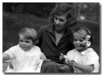
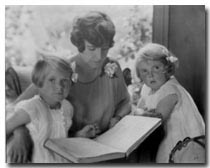
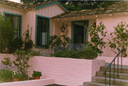
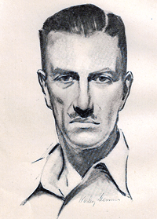

|
||
Marion Boisot |
||
|
Marion Boisot was born in LaGrange, Illinois. She was the daughter of Emile Kellogg Boisot and Lillie Reid. She was the wife of Byington Ford, a manager at the Del Monte Properties in Pebble Beach, California. |
||
| Important Facts | ||
| August 28, 1897 | Born in LaGrange, Illinois. Marion was the daughter of Emile Kellogg Boisot and Lillie Reid. | |
| 1910 | The US Federal Census lists Emile K Boisot (51), Lily Reid (50), Louis M. (17), and Marion (12), living in 6-WD Chicago, Cook, Illinois. Source: 1910 United States Federal Census. | |
| She went to a finishing school in LaGrange, Illinois. |  Patricia, Marion, Mary Jane, 1925 |
|
| April 3, 1915 | She and her parents traveled from Chicago to California staying at the Del Monte Hotel in Monterey. Source: San Francisco Chronicle (San Francisco, CA) Page: 32. | |
| She was known to have dated Jack Neville, who helped design the Pebble Beach Golf Links. They called him "Apple Jack." Source: Conversation with Marion's daughter (Pat). | ||
| October 31, 1920 | Marion Boisot's engagement to Byington Ford was announced in the the Chicago Sunday Tribune and he San Francisco Chronicle newspapers. Source: Chicago Sunday Tribune (Oct 31, 1920) and San Francisco Chronicles (Nov 7, 1920). | |
| November 17, 1920 | Marion was as married to Byington Ford at the Del Monte Hotel in Monterey, California (now the Naval Postgraduate School). | |
| August 22, 1921 | Mary Jane Ford was born in San Francisco, California. | |
| 1924-1935 | Lived in Pebble Beach, California. |  Mary Jane, Marion, Patricia 1927 |
| May 17, 1923 | Patricia Ford was born in San Francisco, California. | |
| December 4, 1926 | Audrey Ford was born in San Francisco, California. | |
| 1927 | Ford, Mr. and Mrs. Byington and Marion Boisot were listed in the SF Social Register. There address was listed as Pebble Beach. Source: San Francisco Social Register 1927. | |
| 1930 | US Federal Census lists Byington Ford (39), Marion B. (32), Mary Jane (8), Patricia (6), and Audrey (3) living in Pebble Beach, Monterey, California. Source: 1930 United States Federal Census. | |
| Byington bought a 400 acre ranch off Via Las Encinas in Carmel Valley, California from the Pacific Improvement Company. Source: Conversation with Audrey Cordrey. | ||
| 1932 | Listed as "FORD, Mr. & Mrs. Byington (Marion BOISOT), Pebble Beach, Cal." Source: Social Register, San Francisco, California, 1932, Vol., XLVI, No. 9. |
 16 Via Las Encinas, Carmel Valley, California |
| 1938 | She divorced Byington Ford. | |
| They sold their house in Pebble Beach. Marion moved San Francisco, California. Marion and her daughters were living at 2170 Jackson St. San Francisco. | ||
| 1938 | They later moved to Pasadena, California (585 Belle Fontaine St.). | |
| April 15, 1939 | Marion B. Ford (40) and Howard W. Ernst (38) were passengers going to Ensenada, Mexico. Source: California, San Diego, Airplane Passenger and Crew Lists, 1929-1954. | |
| August 27, 1939 | Her mother, Lilly R. Boisot, died in Carmel, California. | |
| December 23, 1939 | Married to Howard W. Ernst, M.D. in Pasadena, California. | |
| Feb 1, 1941 | Her father, Emile Kellogg Boisot, died in Pasadena, California. | |
| February 15, 1947 | Married George Faunce Whitcomb in San Francisco. He wrote a book called Serpent's Credo in 1931. |  George Faunce Whitcomb |
| She was a volunteer with the Monterey Peninsula Volunteer Services Thrift Shop. | ||
| 1950s | Maron married Dudley P. Sanford M.D.. | |
| July 4, 1985 | Dudley P. Sanford died in Carmel Valley, California. Source: California Death Index. | |
| June 15, 1990 | Marion died at her home in Carmel Valley, California of a stroke. She was 92 years old. | |
| 1990 | A Wake was held at her home in Carmel Valley, California. Her daughters, Mary Jane, Audrey, and Patricia were at the Wake. |